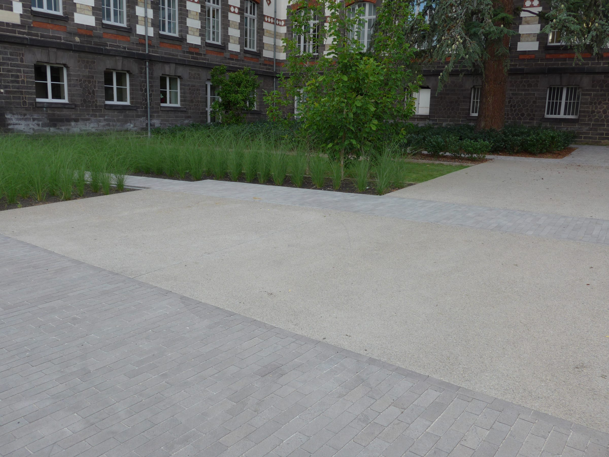
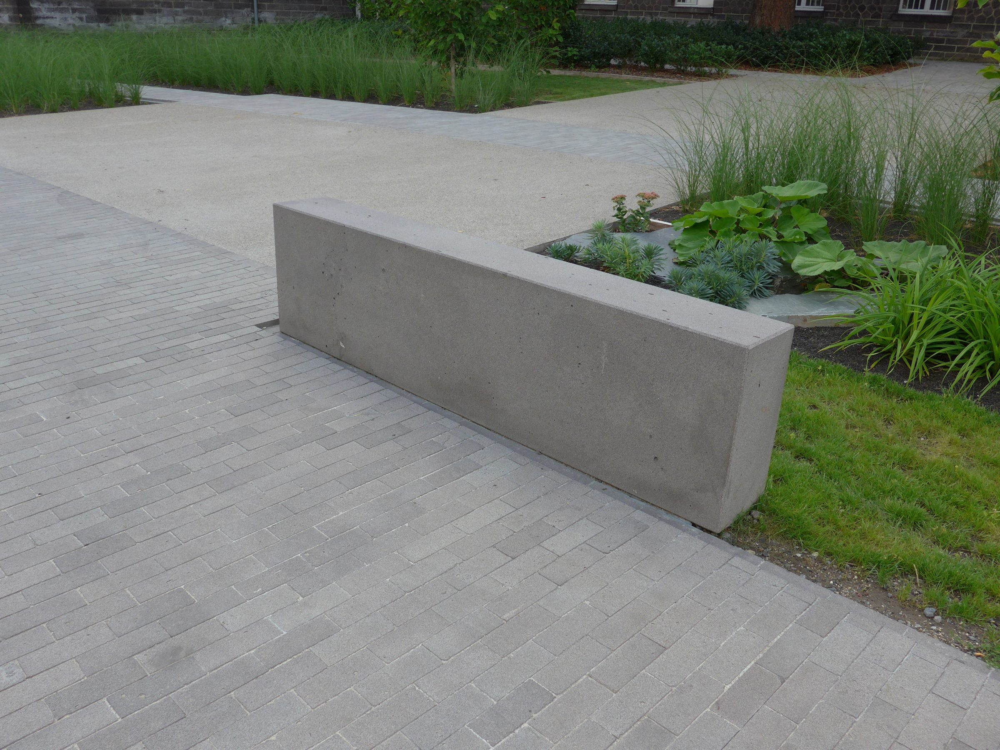
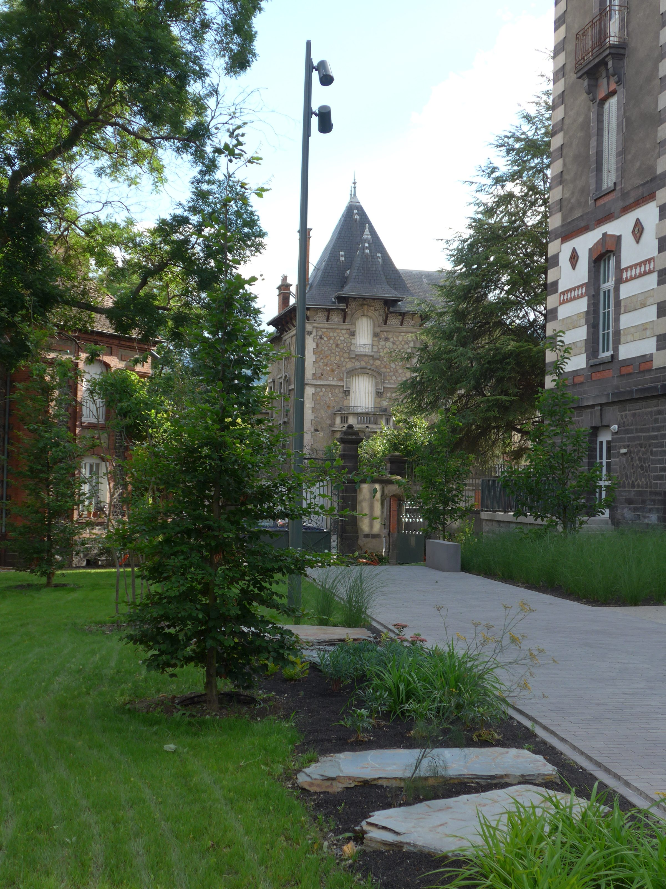
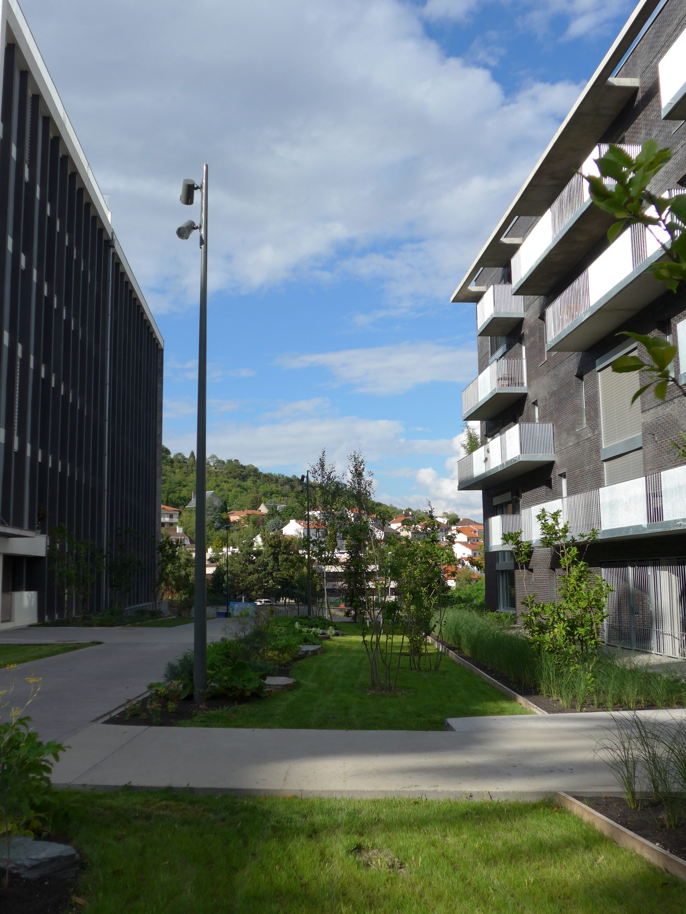
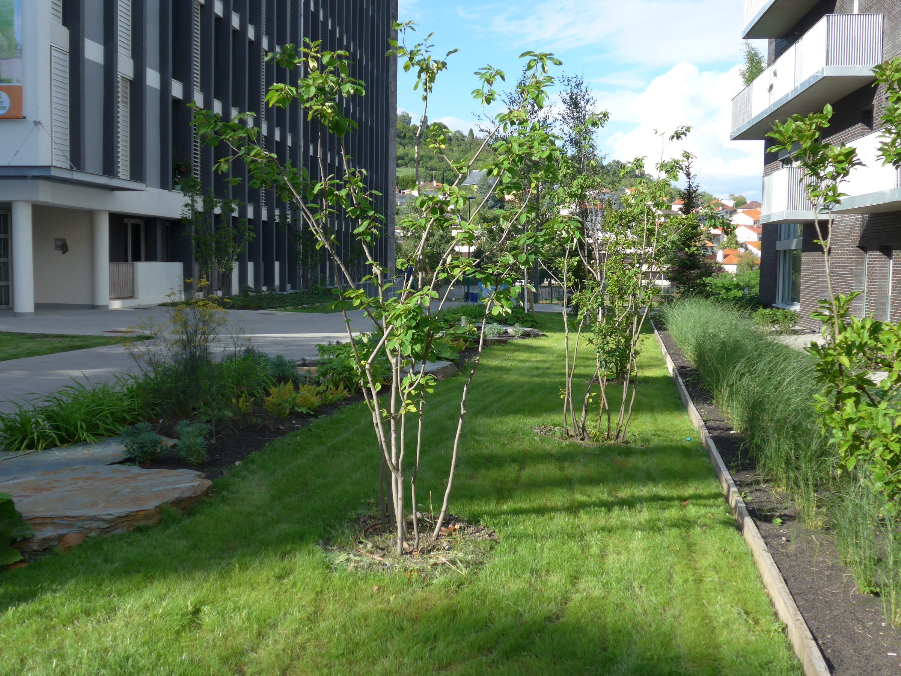
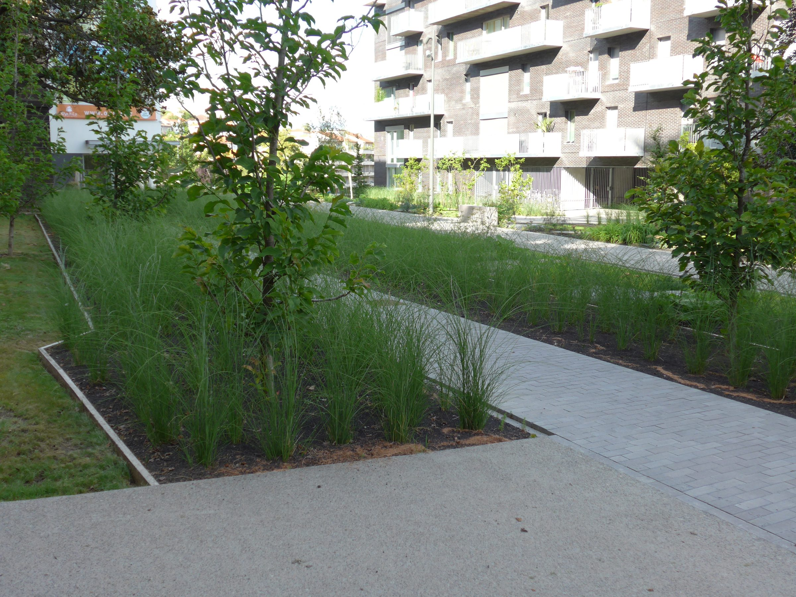
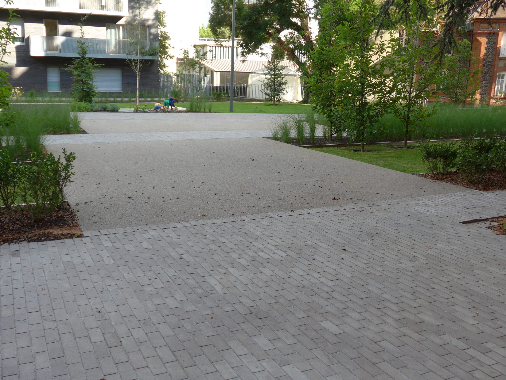

Commande
La requalification des espaces extérieurs de l'ancienne IUFM redonne à cet îlot urbain une véritable cohérence paysagère. Une allée piétonne traversante, réalisée en pavés de pierre de Volvic, structure le site et installe un jardin généreux au cœur de l'îlot.
De part et d'autre, un jardin linéaire de près de deux hectares se déploie : graminées, vivaces, euphorbes, pétasites et sedums, ponctués de plantations structurantes de magnolias et d'amélanchiers.
Les abords alternent bandes engazonnées et dalles de pierre de Volvic posées de manière aléatoire. L'ensemble forme un jardin à la fois libre dans son expression végétale et rigoureusement dessiné — une continuité paysagère de façade à façade.






